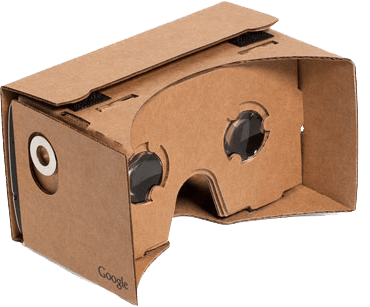
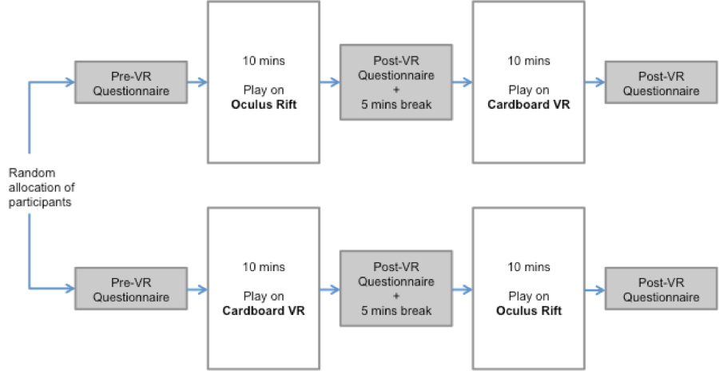
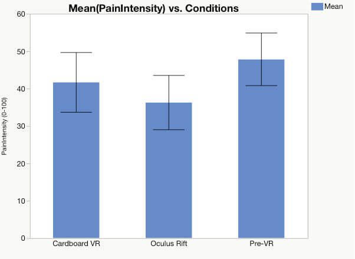

Academic Research, User Research, Virtual Reality, Cardboard, Oculus Rift, Chronic Pain, Pain Distraction, Immersion
In Pain Studies Lab of Simon Fraser University, we mostly work on VR projects for Pain Patients. My research interest is in affordable Mobile VR and its use in pain distraction for Chronic Pain patients. This study was conducted in September 2016 and will be published in a paper and thesis soon.

This study used a repeated-measure design where each patient played InMind on both Cardboard and Oculus Rift in a random order. A random uniform distribution was ensured so that half of the participants used Cardboard first, and the other half used Oculus first. The primary independent variable was the HMD type. The primary dependent variable was the retroactive pain intensity (PI). I have two kinds of PIs– Present Pain Intensity and Retroactive Pain Intensity (pain felt in the last 10 minutes). I used the retroactive PI to measure the patients’ perceived pain intensities while they were inside the virtual environment. PI levels were measured thrice repeatedly–once, before playing the VR game; next, after playing the game on one of the HMDs; and finally, after playing the game again on the other HMD. Patients reported the PI by filling out visual analog scale (VAS) questionnaires. Immersion was another secondary dependent variable, which manifested in several questions on the VAS questionnaire. There were two different variations of VAS questionnaires–one for the Pre-VR condition and, another for the Post-VR condition.

Retroactive Pain Intensity was used to measure the pain intensity felt by the participants during the last 10 minutes inside the VR world. A repeated-measure ANOVA revealed the retroactive pain intensity in the three conditions was statistically significant, F(2,56)=11.007, p<0.05. Mauchly’s test indicated that the assumption of sphericity was not violated, χ2(2) = 3.842, p = 0.146. Effect size was medium, ωHMD = 0.5
Bonferroni posthoc tests revealed a significant difference between the Pre-VR and Oculus Rift conditions, CI.95 = -17.773 (lower) -4.027 (upper), p=0.001. Also, there was a significant difference between Pre-VR and Cardboard VR conditions, CI.95 = -11.516 (lower) -0.151 (upper), p=0.043. However, although only marginally, the difference in pain intensities for Oculus Rift and Cardboard VR was also significant, CI.95 = -10.131 (lower) -4.027 (upper), p=0.050. There was no significant interaction effect for the order of use of the HMDs, F(2,56) = 0.348, p = 0.708.

A repeated-measure ANOVA revealed that exposure to VR had a significant effect on the present pain intensity too, F(2,58) = 5.090, p<0.05. The assumption of sphericity was satisfied, χ2(2) = 0.606, p = 0.739. The effect size, in this case, was small, ωHMD = 0.3. This result is a little different from previous studies. A previous within-subjects study of 20 participants compared present and retroactive pain intensity level between a VR (Oculus DK1) and MBSR (Mindfulness Based Stress Reduction) conditions and found that the difference in present pain intensity was not significant. However, in this study, the participants used two VR HMDs back-to-back. The pairwise comparison using Bonferroni posthoc analysis showed, the difference between Pre-VR and Oculus Rift was significant, CI.95 = -11.11 (lower) -.889 (upper), p=0.017. However, the difference between Pre-VR and Cardboard was not significant, CI.95 = -8.263 (lower) 1.263 (upper), p=0.216.
The difference in immersion levels for these two VR conditions was significant F(1,29) = 7.757, p=0.009; effect size, ωHMD = 0.42